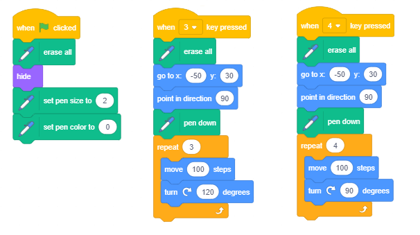
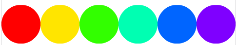
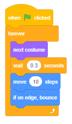
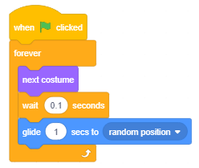

Ponavljanje koraka¶

U prethodnoj lekciji smo već koristili naredbe za ponavljanje u primjerima crtanja, tako da bismo sa manje pisanja dobili likove koji se kreću spuštenom olovkom kako bismo nacrtali ono što smo željeli. Na primjer, umjesto da upišemo 400 naredbi za crtanje isprekidane crte dužine 400 piksela, ispisali smo samo pet: četiri koje ponavljaju uzorak i petina koja kaže koliko puta uzorak treba ponoviti.
U ovoj lekciji povežemo naredbe ponavljanja s naredbama pokreta i izgleda kako bismo stvorili različite animacije. Dodatno ćemo uvesti naredbu koja vam omogućuje unos ulaznih podataka i blokove koji pohranjuju vrijednosti logičkih izraza.
Blokovi koji omogućavaju ponavljanje
Najjednostavniji primjer naredbi ponavljanja je takozvana naredba opis. Forever petlja. Naredbe koje se ponavljaju čine tijelo petlje. Njihovo izvršenje može se zaustaviti samo prekidom programa.

Na primjer, ako želimo steći iluziju da mačka hoda, balerina svira ili leptir leti, dovoljan je scenarij povezati s ponovljenim naredbama  i
i  u beskonačnom ciklusu.
u beskonačnom ciklusu.
Naravno, lik bi trebao imati najmanje dva kostima, a čekanje treba biti kratko, primjerice 2 desetine sekunde (0,2). Naredba za čekanje između prikazivanja različitih kostima znakova je neophodna da biste primijetili promjene u izgledu. Naime, ljudsko oko ne može registrirati tako brze promjene kao što ih je napravilo računalo. Zato čekanjem naredbi “kočimo” prikaz sljedećeg kostima, sve dok naše oko ne prihvati prethodnu sliku.
U primjerima crtanja iz prethodnog poglavlja koristili smo tzv “Brojanje petlji”. To su ponavljanja koja unaprijed znaju koliko će puta ciklus biti izveden.

Na Scratchu postoji i naredba za opisivanje ciklusa čiji broj ponavljanja nije unaprijed poznat, ali ovisi o tome je li ispunjen uvjet za izlazak iz ciklusa.

Stanje naredbi za preskakanje tijela ciklusa (uvjet izlaska) provjerava se na početku ciklusa, tako da može biti da se ciklus ne izvrši jednom ako je taj uvjet ispunjen pri prvoj provjeri. Može se dogoditi i da se ciklus izvršava na neodređeno vrijeme, ako uvjet za izlazak iz ciklusa nikada nije ispunjen.
 Prouči sljedeće primjere projekta¶
Prouči sljedeće primjere projekta¶

Vidjeli smo da je pozornica široka 480 točaka i visoka 360 točaka i da se svakoj od točaka pozornice može pristupiti prema njenim koordinatama. U slijedećim primjerima napravit ćemo slike ostavljajući žig likova na zadanim pozicijama. Naravno, možemo nacrtati lik koji nam odgovara koristeći grafički uređivač - na primjer, crveni krug ili plavi kvadrat, ali budući da želimo da slike budu atraktivnije, u našim ćemo primjerima upotrijebiti Zvjezdani lik - žutu zvijezdu iz biblioteke likova.
Da bismo precizno prilagodili slike, malo ćemo izmijeniti zvijezdu, koja izvorno ima veličinu 47x48 piksela, što možemo vidjeti ako idemo na karticu Kostima.
Odgovara nam da imamo lik veličine 40x40, jer se tada 12 zvjezdica (480: 40) može smjestiti točno u red s lijeva na desno od pozornice, a točno 9 (360: 40) može se smjestiti između gornjeg i donjeg ruba zaslona. Nadalje, nama više odgovara da lik nema konturu i da je cjelina ravnomjerno ispunjena jednom bojom.

Kako mijenjamo karakter
 Pomoću alata
Pomoću alata  odabiremo cijeli lik
odabiremo cijeli lik
 Uklonite konturu (namjestite njenu debljinu na 0)
Uklonite konturu (namjestite njenu debljinu na 0)
 Odaberite unutarnju zvijezdu i izbrišite je
Odaberite unutarnju zvijezdu i izbrišite je
 Odaberite cijlei lik i dovedite ga do 40х40.
Odaberite cijlei lik i dovedite ga do 40х40.
Tako promijenjena zvijezda bit će jedini lik u sljedećim zadacima.
Sljedeći primjer ilustrira kako se slaganje više ciklusa može koristiti za izgradnju složenih ciklusa. Također pokazuje kako se postojeći znakovi mogu izmijeniti pomoću ugrađenog uređivača vektora. Sam projekt sastoji se od nekoliko jednostavnih zadataka.
Primjer 1 – Projekt “Stars”¶

Zadatak 1
Napravi program koji će nacrtati 4 zvijezde različitih boja veličine 120 piksela jednu pored druge od lijevog do desnog ruba ekrana. Crtanje ćeemo realizirati korištenjem naredbe  .
.
Rezultat izvršenja treba biti kao na slici 1.
This result can be achieved by completing the following steps:
|
|
 promijenimo boju lika (naredbom za mijenjanje efekta boja)
promijenimo boju lika (naredbom za mijenjanje efekta boja) stavimo naredbu žig
stavimo naredbu žig pomaknemo lik udesno za njegovu širinu (120 koraka)
pomaknemo lik udesno za njegovu širinu (120 koraka) promijenimo boju lika (naredbom za mijenjanje efekta boja)
promijenimo boju lika (naredbom za mijenjanje efekta boja) stavimo naredbu žig
stavimo naredbu žig pomaknemo lik udesno za njegovu širinu (120 koraka)
pomaknemo lik udesno za njegovu širinu (120 koraka) promijenimo boju lika (naredbom za mijenjanje efekta boja)
promijenimo boju lika (naredbom za mijenjanje efekta boja) stavimo naredbu žig
stavimo naredbu žigPrimjećujemo da smo korake 4-6 ponovili 3 puta. Mogli smo isto postići is a manje pisanja, što ilustrira sljedeća slika

Blok  iz Control skupine omogućuje nam da naredbenu skupinu napišemo samo jednom i odredimo koliko puta ih treba ponoviti.
iz Control skupine omogućuje nam da naredbenu skupinu napišemo samo jednom i odredimo koliko puta ih treba ponoviti.
On je primjer takozvanih C-blokova koji po izgledu podsjećaju na slovo C. Utor unutar C-bloka prima skriptu kao ulaz. Dakle, ovaj blok ima 2 ulaza: jedan za broj ponavljanja i jedan za skriptu.

Zadatak 2
Napišite program koji će s lijeve na desnu stranu zaslona izvući 12 zvijezda 40 x 40, kao na slici 2.
Ovaj je zadatak sličan prethodnom, samo što nema potrebe za povećanjem dimenzija lika. Prvo bismo ga poslali na mjesto x = -220, y = 0, a zatim ostavili žig. Tada bi bilo potrebno ponoviti korake 4-6 prethodnog programa 11 puta, premještajući lik 40, umjesto 120 koraka. Ali koliko bi vremena trebalo da napravite ovaj jednostavan program bez korištenja naredbe ponavljanja?
Rješenje zadatka prikazano je na sljedećoj slici.


Zadatak 3
Napišite program koji će na sredini ekrana crtati 15 zvijezda različitih boja, prva bi trebala biti 320x320 (800% izvorne veličine), a sljedeća za 50 manja, kao na slici 3.
Kad kažemo 50 manja, mislimo na 750%, 700%, … izvornu veličinu (nije 50 piksela manja, niti 50% od 800%). Kako ne bismo zbunili sliku s ostacima slike iz prethodnih izvršavanja programa, u početku ćemo staviti naredbu brisanja.
Rješenje zadatka prikazano je na sljedećoj slici.


Zadatak 4
Napišite program koji će nacrtati okvir oko pozornice sastavljene od zvijezda različitih boja kao na slici 4.
We can devise a solution by connecting solutions to 4 simpler problems.
Crtanje zvjezdice na gornjem rubu pozornice s lijeva na desno.
Crtanje zvjezdice na desnom rubu pozornice od vrha do dna.
Crtanje zvjezdice na donjem rubu pozornice s desna na lijevo.
Crtanje zvijezda na lijevom rubu pozornice odozdo prema gore.
Prvi problem smo već riješili u problemu 2. Sve što trebamo učiniti je promijeniti vrijednost za u u početne položaje zvijezde, umjesto y = 0 trebamo staviti y = 160. Drugi je problem najlakše riješiti ako se promijeni orijentacija znaka, umjesto da se pomiče udesno, trebao bi se spustiti. Blokovi promjene boje i ostavljanja brtve trebaju se ponoviti 8 puta. Treći i četvrti problem rješavaju se na sličan način, samo se unaprijed mijenja orijentacija lika i izračunava se koliko puta mora biti otisnut. Skraćeno cjelovito rješenje i dijelovi koji rješavaju drugi i treći problem prikazani su na sljedećoj slici.

Strukturа rеšеnjа оvоg zаdаtkа, u kоmе sе nižе pеtlја zа pеtlјоm, nаzivа sе liniјskа kоmpоziciја ciklusа.

Task 5
Napišite program koji će crtati 4 zvijezde od 120 piksela jedna pored druge s lijeve na desnu stranu zaslona. Svaku od tih 4 zvijezde treba formirati više zvijezda različite veličine i boje, poput zvijezde u zada tku 3.
Rezultat izvršenja trebao bi biti kao na slici 5.
Rješenje ovog problema također ima složenu strukturu, ali treba ugurati petlju koja zalijepi manje zvijezde nad većim zvijezdama u Zadatak 3, u petlju koja se izvršava 4 puta i crta velike zvijezde jedna pored druge kao u zadatku 1. Kompletno rješenje je prikazano u do sljedeće slike.

Strukturа rеšеnjа оvоg zаdаtkа, u kоmе sе nižе pеtlја zа pеtlјоm, nаzivа sе kоmpоziciја koncentričnog ciklusа.
Example 2 - Primjer 2 – Projekt “Geometrijske figure”¶
U ovom ćemo projektu pokazati kako se mogu crtati prave geometrijske figure trokuta, kvadrata, šesterokuta i šesterokuta.
Pravilni poligoni imaju sve strane jednake i sve kutove jednake. Nacrtaćemo gore poligone počevši od vrha u sredini zaslona, sa stranicama dužine 100 piksela.
Započnimo crtanjem kvadrata. Olovku ćemo poslati u sredinu zaslona, točku (0,0), spustiti je i ponoviti 4 puta nekoliko naredbi: idite 100 koraka, okrenite se za 90 stupnjeva.
Ako znamo da je zbroj vanjskih kutova svakog poligona jednak 360 o (vidi sliku), tada lako možemo napraviti blokove naredbi koji crtaju trokut, šesterokut i šesterokut.

Dijelovi skripti koji crtaju gornje poligone prikazani su na sljedećoj slici.

Napomena. Također možete koristiti okretanje ulijevo i pokušati nacrtati kvadrat i šesterokut u položaju prikazanom na gornjoj slici.
Kao i u prethodnom primjeru, klikom na zelenu zastavicu briše se sve što je prethodno bilo na pozornici, postavljaju se vrijednosti boje i debljine olovke i daju upute kako koristiti projekt.
Da bi upute bile na pozornici u svakom trenutku, stvorit ćemo pozadinu koja se ispisuje pomoću ugrađenog uređivača slika. Stupni izgled izvedenog šesterokutnog crteža prikazan je na sljedećoj slici.

Svaka od skripti povezanih s tipkama tipkovnice 3-6 prvo briše sve prethodno nacrtano, sakriva lik, a zatim crta odgovarajući poligon. Sljedeća slika prikazuje skripte za pokr etanje programa i crtanje trokuta i kvadrata.
{kind=link}
Nadogradnja projekta
Projekt ćemo poboljšati crtanjem geometrijske figure koju je dao korisnik s ulaznim podacima. Također u ovoj verziji projekta postavljeni su parametri crtanja klikom na zelenu zastavicu. Tada se od korisnika traži da unese broj stranica poligona koji treba izvući.
Naredba za unošenje podataka  nalazi se u grupi Sensing.
nalazi se u grupi Sensing.
Nakon izvršenja ove naredbe Scratch pamti što je korisnik upisao u prostor zvan  .
.
Od korisnika se očekuje da unese broj između 3 i 6, ali ako korisnik unese broj izvan ovog raspona, program neće raditi ispravno, tako da to treba spriječiti.
Jedan od načina za kontrolu unosa je ponavljanje zahtjeva za korisnika dok ne unese broj iz navedenog intervala.

Kad se dobije ispravan unos, koristi se za izračunavanje broja ponavljanja i kuta rotacije, tako da se sva četiri poligona mogu nacrtati istim naredbama.

A za sljedeći projekt koristit ćemo dijelove prethodnog projekta. U njemu ćemo pokazati kako koncentričnim sastavom ciklusa brojanja možemo izvući učinkovite slike dobivene ponavljanjem uzorka. Uzorak možemo ponoviti nakon niza koraka - tako dobivamo tzv granice - ukrasni rubovi. Uzorci se također mogu ponoviti nakon zakretanja za kut ili nakon kombinacije oba pokreta.
Primjer 3 – Projekt “Ornaments”¶
Ako više puta ponovimo brojčani ciklus, koji iz prethodnog primjera crta pravilni pentagon, dobit ćemo ornament - složeniju sliku koja se sastoji od pentagona. Na primjer, ako nacrtamo 20 takvih petokruta koji se kreću s lijeve na desni rub pozornice, dobit ćemo sljedeću sliku .

Crtanje pentagona omogućava da se ciklus (2) umetne u vanjski ciklus (1). Vanjski se ciklus ponavlja 20 puta. Svaki put kada je vanjski ciklus dovršen, jedan se šesterokut crta na trenutnom položaju olovke, nakon čega se znak crte pomiče udesno s podignutom olovkom (3). Znak pomiče samo polovinu duljine stranice peterokut, tako da se peterokut preklapa.
Međutim, ako ponovimo crtanje peterokut, promijenivši orijentaciju lika prije nego što nacrtamo svaki od njih, tako da on ili ona okrene cijeli krug, dobit ćemo sljedeći ukras.

Budući da je puni krug 360 stupnjeva, a lik se okreće za 15 stupnjeva s olovkom podignutom (3) nakon crtanja peterokuta (2), potrebno je ponoviti postupak 24 puta, tako da se vanjski ciklus (1) izvodi 24 puta. Ako između svaka dva crteža lik promijeni svoj kut i krene 10 koraka, dobivamo malo izmijenjen ornament.

Ako ponovimo drugi ukras 4 puta, prelazeći s lijevog na desni rub zaslona, dobit ćemo sljedeću sliku.

Dakle, crtanje posljednje slike ostvaruje se koncentričnom kompozicijom od 3 ciklusa: unutarnja crta crta jedan pentagon (3), srednja (2) ponavlja crtanje pentagona i lik rotira 24 puta s podignutom olovkom, a vanjska (1) ponavlja crtež kružnog ornamenta i pomicanje figure s podignutim olovka (4) za promjer ukrasa.
Projekt omogućuje crtanje svakog od prikazanih ukrasa klikom na jedan od tipki tipkovnice 1-4. Pored ove 4 skripte, postoji skripta koju pokreće klik zelenom zastavicom i skripta pokrenuta porukom s uputama. Poruka s uputama izdaje svaka skripta na kraju svog rada. Kad lik primi ovu poruku, ona se pojavljuje na vrhu zaslona i daje upute kako započeti crtanje ukrasa.

 Odgovori na sljedeća pitanja¶
Odgovori na sljedeća pitanja¶
Pitanje 1¶
- da
- ne
- Točno.
Q-55: Je li uvjet za izlazak iz ciklusa nazvan tijelom ciklusa?
Pitanje 2¶
- da
- Točno.
- ne
Q-56: Može li izvršenje naredbe beskonačnog ciklusa zaustaviti jedino prekidanje programa?
Pitanje 3¶
- yes
- no
- Točno.
Q-57: Repeat until naredba- zna li se unaprijed koliko će se puta izvršiti tijelo ciklusa?
Pitanje 4¶
Q-58: Which of these forever loops allows the sprite to move left-right and look right, if the  ,
,  and
and  commands were previously executed? (Select all correct answers).
commands were previously executed? (Select all correct answers).

Pitanje 5¶
Q-59: U kojem od sljedećih beskonačnih ciklusa lik stalno mijenja dva položaja: noge dolje i noge gore, ako prethodno izvršane naredbe , i ?

Pitanje 6¶
Q-60: Koja skripta brojeva lika izvrši u 80 koraka? (Izaberi sve točne odgovore).

Pitanje 7¶
Q-61: Koja skripta brojeva lika izvrši u 80 koraka? (Izaberi sve točne odgovore).

Pitanje 8¶

- Hello END
- Scratch ne pravi razliku između velikih i malih slova, stoga je ispunjen uvjet za izlazak iz petlje.
- What's your name
- Ovo je poruka za ulazak a ne izlazak.
- Goodbye
- Točno.
Q-62: Što će lik izgovoriti ako na pitanje What´s your name, a korisnik odgovori End*?
Pitanje 9¶
- A
- Točno.
- B
- To je uvjet za unos petlje u ovaj niz naredbi.
- oba
- Ono što je uvjet za izlazak petlje u (A) je ujedno i uvjet za ulazak u petlju u (B).
- nijedan
- Petlja (A) omogućuje liku da kaže Hello u danom stanju.
Q-63: Izvršavanjem koje skripte naredbi lik izgovara Hello ako korisnik unese vrijednost 0?

- nijednom
- Uvjet za izlazak iz petlje nije ispunjen za prva 3 odgovora.
- 2 puta
- Uvjet za izlazak iz petlje nije ispunjen ni za broj 3.
- 3 puta
- Točno.
- 4 puta
- Kada se ispuni uvjet za izlazak iz petlje, naredbe iz tijela petlje se ne izvršavaju.
Q-64: Koliko puta će se izvršiti tijelo skripte (A), ako korisnik na pitanje unosi odgovore sljedećim redom: 1, 2, 3, 0.
Pitanje 10¶

- Točno.
- Primjerice, 7 će prihvatiti točan unos.
- Primjerice, 3 neće prihvatiti kao točan unos.
Q-65: Kojim slovom je obilježen uvjet koji će omogućiti da ulazna provjera podataka bude točna?
 Pokušaj!¶
Pokušaj!¶
Vježba 1¶
Otvorena ogrlica. Kreiraj projekt koji prikazuje niz krugova različitih boja i veličine počevši od lijevog kraja pozornice.
{kind=link}
Upute:
Slika se dobiva spuštanjem olovke različitih boja, debljine 80, koju drži skrivena figura koja se u početku nalazi u položaju (-200,0). U 5-ponavljajućem ciklusu lik treba ići 80 koraka s podignutom olovkom, povećati broj boje olovke za 30 i smanjiti ga. Početna vrijednost boje je 0. Provjerite je li prethodni crtež izbrisan klikom na zelenu zastavu.
Vježba 2¶
Zatvorena ogrlica. Kreiraj projekt koji crta zatvoreni niz od 12 krugova različite boje debljine 50.
{kind=link}
Upute:
Slika se dobiva spuštanjem olovke različitih boja, debljine 50, koju drži skrivena figura koja se u početku nalazi u položaju (-50,50). U ciklusu koji se ponavlja 12, lik treba ići 50 koraka s podignutom olovkom, okretati se za 30 stupnjeva i povećati broj boja olovke za 15, što onda ostavlja trag. Početna vrijednost boje je 0. Provjerite je li prethodni crtež izbrisan klikom na zelenu zastavu.
Vježba 3¶
Niz krugova. Kreiraj projekt koji prikazuje niz krugova različite boje i veličine počevši od lijevog kraja pozornice.

Upute:
Slika se dobiva spuštanjem olovke različite debljine i različitih boja, koju drži skrivena figura koja je u početku u položaju (-200,0). Početne vrijednosti za boju su 0, a za debljinu 80. U ciklusu koji se ponavlja 5 puta broj boja olovke treba povećati za 30, a debljina smanjiti za 10. Znak treba ići 80 koraka udesno, naravno s podignutom olovkom. Petlja također treba imati naredbu čekanja da bolje pratite što se događa. Obavezno uklonite prethodni crtež klikom na zelenu zastavu.
Vježba 4¶
Koncentrični krugovi. Kreiraj projekt koji prikazuje niz koncentričnih krugova različite boje u centru pozornice.

Upute: Slika se dobiva spuštanjem olovke različite debljine i različitih boja, koju drži skrivena figura smještena u sredini ekrana. U ciklusu koji se ponavlja 8 puta, boju olovke treba povećati 25 puta, a debljinu smanjiti za 30.Početne vrijednosti za boju su 0 (crvena), a za debljinu 240 (najdeblja). Petlja također treba imati naredbu čekanja da bolje pratite što se događa. Trebao bi biti smanjen nakon svake promjene vrijednosti atributa olovke. Obavezno uklonite prethodni crtež klikom na zelenu zastavu.
 Ispravi greške!¶
Ispravi greške!¶
Greška 1¶
Učenik je želio da njegov lik zakorači između lijevog i desnog ruba pozornice. Zbog toga je stavio forever ciklus neprestano mijenjajući kostime i koračajući 10 koraka dok ne dođe do ruba, kad se okrene. Međutim, nije mu se svidio što lik stupa gore na lijevi rub pozornice Što je trebao učiniti da popravi ovu pogrešku?
{kind=link}
Odgovor:
To može popraviti uključivanjem naredbe u skriptu lika.
Greška 2¶
Učenik je želio svog lika leptira koji ima dva kostima - s podignutim i spuštenim krilima, neprestano klizući krilima između točaka čije su koordinate odabrane nasumično. Ali njegov program to nije omogućio. Leptir je kliznuo s jedne točke na drugu ili sa spuštenim krilima ili podignutim krilima. Što je pogreška?
{kind=link}
Odgovor:
Trebalo je naprav iti 2 skripte koje se izvršavaju paralelno.

 Što smo naučili¶
Što smo naučili¶
U ovoj lekciji bavili smo se naredbama ponavljanja. Kroz primjere projekata ilustrirali smo kako se koristi svaka od tri vrste ciklusa: beskonačni, numerički kod- za koji je unaprijed poznat broj ponavljanja tijela ciklusa i ciklus s preduvjetom - za koji broj ponavljanja ovisi o ispunjenju nekog uvjeta. Pokazali smo da se dva ili više ciklusa mogu kombinirati tako da se izvode jedan za drugim (sekvencijalni sastav) ili ulažu jedan u drugi (koncentrični sastav). Također smo naučili kako koristiti naredbu za unos podataka.
Primjeri projekta: 5Studio
Novi pojmovi: loop, loop body, the exit condition, forever loop, counting loop, condition loop, linear composition of loops, nested loop composition, data input command.
Nove naredbe:  -
-  , ,
, ,  ;
;  - ;
- ;
 - , ;
- , ;  - ,
- ,  ,
,  .
.
 Napravi neki od sljedećih projekta¶
Napravi neki od sljedećih projekta¶
Project 1 - “Šesterokut”¶
Napravi program koji crta šesterokut čija je dužina stranice generira kao slučajni broj iz interval [100,200].
Project 2 - “Kvadrati”¶
Napravite program koji nudi kvadrate čije su strane paralelne s koordinatnim osi ili koordinatne osi zatamnjuju kut od 45o. Odabir treba izvršiti klikom na tipku od 1 ili 2 tipkovnice. Priručnik s uputama za program mora biti ispisan na pozadini pozornice kao u primjeru 2. Duljina stranice treba biti 100 piksela.
Project 3 - “Trokuti”¶
Napravite program koji nudi crtež u obliku trokuta koji je:
а) jednakostranični, b) jednakokračni, c) pravokutni, d) oštri, e) tupi.
Projekt bi trebao imati priručnik koji kaže koja klasa na tipkovnici aktivira crtanje vrsta trokuta.
Planirajte točke na kojima su koordinate svakog od ovih trokuta, a zatim nacrtajte stranice trokuta pomoću naredbe glide.
Projekt 4 – “Četverokut”¶
Napišite projekt koji nudi četverostrani crtež koji je:
kvadrat,
pravokutnik,
romb,
paralelogram,
trapez.
Planirajte svoj crtež tako da se na gornjoj pozornici crte sve gore navedene četverokutne vrste.
Kad se klikne zelena zastava, trebao bi se pojaviti priručnik s uputama za program.
Događaji koji pokreću crtanje određenih vrsta četverostrana trebali bi biti povezani s utrkama na tipkovnici po vašem izboru.
Napomena. “Četverokuti” su razrađeni u nastavnom programu matematike za šesti razred.